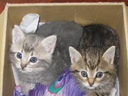
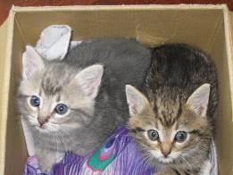
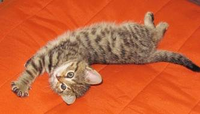
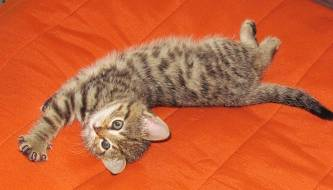
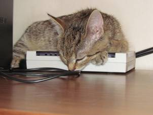
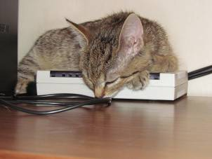

SAKKE JA SAANAOPPIMATERIAALIA NETISSÄ VUODESTA 1999 LÄHTIENPSYKOLOGIAN PIKALINKIT PSYKAN VIDEOABIKURSSIT: PSYKOLOGIAN MAAILMA -VIDEOKERTAUSKURSSI ABEILLE (vlogi) - uudet OPSit PS7 ABI KERTAUSKURSSI (opetustilanne) - VANHA OPS (OPS 2016 ja 2021): PS1 Toimiva ja oppiva ihminen PS2 Kehittyvä ihminen PS3 Tietoa käsittelevä ihminen PS4 Tunteet ja mielenterveys PS5 Yksilöllinen ja yhteisöllinen ihminen SAANAN HAASTATTELU! Koko nimi? - Saana ... ei kai muuta Miksi noin hyvä nimi? - Kysy sitä omistajilta Synnyinkunta? - Saarijärven salomailla... Syntymäpäivä? - Only heaven and mother knows! Lempiruoka? - Ihan mikä vaan menee! Pääruoka? - Olen kaikkiruokainen, mitä vaan! Lempipaikka? - Modeemi Lempipaikka kotona? - Modeemi Nukut? - Modeemin päällä, ei, sängyn keskellä Lempiharrastus? - Kiusata Sakkea, heh Lempiväri? - Ruskehtavanharmaa, harmaht... Sanonta? - Tiu tiu=Heti kaikki mulle! Sakke - persoona ennen muuta Saana - olen suomalainen Sakke ja Saana - yhdessä enemmän SAKEN JA SAANAN KUVIA SAA TULOSTAA OMAAN KOTIKÄYTTÖÖN JA MYÖS LAITTAA OMILLE KOTISIVUILLE, KUN KUVAA EI MUUNTELE JA MAINITSEE LÄHTEEN (NETTISIVUN OSOITE) JA KISSAN NIMEN. |
SAANA - OLEN SUOMALAINENKuvia "Saana-neitokaisesta" kaikille kissaystäville iloksiSaana piristää päiväsiSaanan tarina alkoi joskus elokuussa 2012 Saarijärvellä oikein kunnon vanhan ajan maatalossa, jossa kissoja vilisee kuin "Vilkkilässä" konsanaan. En ennättänyt kaikkia kissoja laskemaan sillä sekosin laskuissani päästyäni yhdeksään. Saanan äiti tuli jo varhain tiineeksi ja synnytti sitten kaksi kissaa Saanan ja tämän sisaren. Molemmat mitä herttaisimpia kissoja. Minulle kissat tulivat tutuksi siksi, että aloin tuttavapiirissä kyselemään, mistä saisin hankittua kissanpennun lahjaksi vaimolleni. Siskoni tiesi heti ja niinpä autoon ja kissaa katsomaan. Niissä pennuissa, joita varsinaisesti olimme menossa katsomaan, ei ollut yhtään mieleistä, mutta eräs pikkuneiti vei sydämeni välittömästi. Navettakissojen yleinen ongelma ovat loiset. Isäntäväki ei ennätä kissojensa perään katsomaan, vaan kissat ovat ennemminkin työläisiä - hiirien ja myyrien pyytäjiä ja toisaalta lahjaksi saavat ruuan ja mahdollisuuden elää maatilan turvallisessa ympäristössä vapaasti - sanoisinko entisajan tyyliin kissamaisesti. Saanassa oli loisia jos jonkinmoisia. Väiveen, jotka ovat hyvin harvinaisia nykykissoissa, munia Saanan turkki oli välillä täpötäysi. Välillä taas lie emo niitä pois nuollut. Haimme Saanan itsellemme, kun Saana oli noin 8 viikon ikäinen (vaikka alarajana pidetään ehdottomasti 12 viikkoa). Saana oli kuitenkin jo vieroitettu emon rintamaidosta ja söi kiinteää ruokaa. Lisäksi Saana oli tottunut jo ihmisiin ja emolla näytti olevan muita kiireitä. Lisäksi halusimme Saanan pikaisesti rokotettavaksi, jotta loiseläimet saataisiin pikkukisusta pois. Tavalliset pikkukissojen mato- ja väivekuurit eivät tehonneet, vaan tarvittiin kovempaa myrkkyä. Stronghold-kuuri tehosi. Ystävällinen eläinlääkäri Hiskinmäen eläinsairaalassa kertoi minulle, että Stronghold tappaa kaiken muun paitsi kissan. No, välillä näytti siltä, että taitaa kuolla kissakin. Saanan maha meni täysin ripulille. Saana ripuloi muutamia päiviä eikä oikein suostunut syömään mitään ja erityisesti nesteyttämisen kanssa oli ongelmia. Niinpä ei muuta kuin eläinklinikalle nesteyttämään. Pari ruiskullista keittosuolaliuosta tehosi kummasti ja kissa piristyi silmissä. Pikku hiljaa Strongholdin sivuoireet katosivat ja niin todella kävi: kaikki muut eliöt Saanasta kuolivat paitsi Saana itse! Saana on itse piristysruiske, jolta ei vauhtia puutu. Saana oli äsken tuolla, mutta nyt se on jo tuolla. Saanan kanssa kun leikkii kissaputken kanssa, jossa on kolme suuaukkoa sivussa ja yksi päällä, niin et voi koskaan tietää, mistä Saana vilahti ja minne. Vauhtia piisaa hurjasti. Kun Sakelle ja Saanalle antaa ruokaa, on Saana kiivennyt housujasi myöten jo kerjäämään hirmuisella "tiu tiu"-äänellä korvasi juureen, kun Sakke rauhallisesti istuskelee ruokaa odotellen. Kutsun Saanaa nimellä "Saana-neitokainen", koska minun kotiväelläni lapsuudesta alkaen, ei ole koskaan ollut yhtään tyttökissaa. Siksi on niin erikoista, että nyt meillä on neiti Saana-kissa. Saana on perussuomalainen, ei siis puoluekannaltaan, todennäköisesti Saana olisi keskustalainen - sillä niin vahva jalansija Keskusta-puolueella on saarijärveläisten pientilallisten sydämissä. Mutta Saana on perus(synnyltään) välilyönti suomalainen kissa, sillä Saanan väritys on sitä eurooppalaisen metsäkissan ja suomalaisten maatiaiskissojen perusväriä eli tabby, kuten hienostokissaihmiset sanoisivat. Saana on tavallisen ihmisen kielellä raidallinen ja juuri sellaisen kissan halusin etsiä ja löysin. Kun olin pikkupoika 60-luvun Pajupurolla, oli mummolassamme juuri samanvärinen kissa. Ja uskonpa, että tämän värisiä kissoja ovat mummoloiden mummolat olleet pullollaan sitten esi-isiemme eläessä. Tämä on suomalaisen peruskissan väri. Upeaa Saanassa on se, että väri menee erittäin symmetrisesti molemmilla puolilla niin kasvoissa kuin rinnassa ja selässä. Voi olla, että värisävytys vielä hieman muuttuu kasvaessa, mutta tällä hetkellä näyttää upealta. Saana on lyhytkarvainen, ruipelohäntäinen, mikä sinänsä ei sovellu yhtään eurooppalaiseen metsäkissaan. Mutta Saana on kuin tunturinsa Saana: rusehtavan harmahtava tai harmahtavan rusehtava.  

Saanan siskokin on jo löytänyt uuden kodin. Kun emo sai vain kaksi pentua, kasvoi pennuista todella kuin paita ja peppu. Siksi oli vaikea erottaa heitä toisistaan ottamalla vain jompi kumpi. Olikin ihan siinä ja siinä, etten olisi ottanut molempia, mutta pelkäsin, ettei meidän Sakkemme olisi selvinnyt henkisesti siitä paineesta, mikä olisi tullut kahdesta kissasta. Oikeassa taisin ollakin. Vaikka Sakke suhtautuu Saanaan todella hienosti, oli alussa Sakella vaikeuksia. Sakke koki ikäänkuin hyljätyksi tulemista. Ja mitäpä Saanalle kuuluu nyt? Saana sai juuri tätä kirjoittaessani kolmoisrokotuksen ja on 14-viikkoinen. Saanalla on edessä vielä iso operaatio tuossa puolivuotiaana, nimittäin sterilisaatio. Sakelle kastraatio oli hyvä juttu. Uskomme, kuten asiantuntijatkin, että sterilisaatio on hyvä juttu Saanalle. Molemmat kissat, kun elävät kaupunkiolosuhteissa kerrostalossa sisäkissoina. Monet surut jäävät silloin kissoilta pois, mikä on hyvä asia. Oikeastaan Saanan tämän hetken kuulumisista enemmän kuin sanat kertovat kuvat (kuvat aikajärjestyksessä):  

 

Vähän ylempänä näkyy jälleen Saana tyypillisessä "rukousasennossaan", tällä kertaa jo valveutuneena. Kolme alimmaista kuvaa kertovat kuinka Saana tykkää nukkua modeemin päällä. Ihmismaailmassa Saanasta olisi varmasti tullut viestintäministeriön johtaja. Ei muuta kuin näkemisiin. Minusta isäntäni kirjoittelee sivuilleen varmaan taas ihan kohta jotakin (toivottavasti ei paljasta mitään pöljyyksiäni...). Nykyään Saana on jo yli viisi vuotias ihana patukka! (1.1.2018)
Veipä isännältä vähän aikaa, nimittäin viisi vuotta, ennenkuin päivitti sivulleen minusta yhtään kuvaa. No, se kun on vaan harrastanut tuota postimerkkeilyään. Mutta tässä minä olen nykyään. Ensimmäisessä kuvassa odottelen isäntää ja Sakkea päiväunille uudessa kodissamme Äänekoskella ja vuosihan on jo 2017. Tämä uusi koti on ollut mukava asua ja minusta on tullut yhdessä asiassa taitava. En nimittäin koskaan aiemmin jaksanut hypätä keittiön lattialta ruokapöydälle, mutta nykyään jaksan ja hyppään joka päivä ja loikoilen pöydällä katsellen ulos ikkunasta lintusia ja maisemia. Alimmassa kuvassa olen hypännyt pöydälle, mutta nukahtanut siihen! Toisessa kuvassa nukun isäntäni jalan päällä sängyssä. Sakke nukkuu aina tuossa vieressä parisängyssämme. Tässä on kiva ja turvallista nukkua! Mukavaa päivää sinulle: "tiu-tiu". |